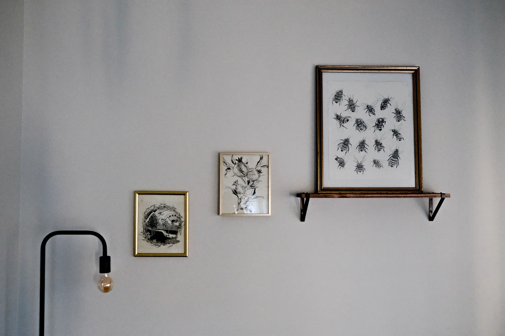
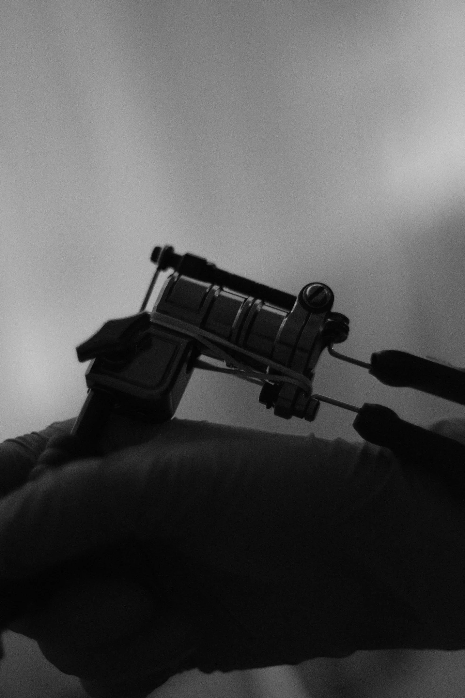
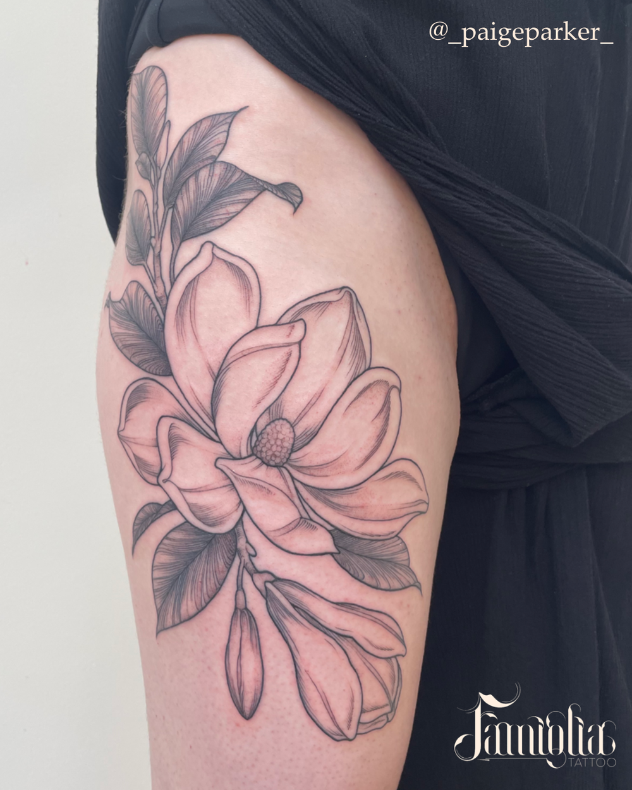
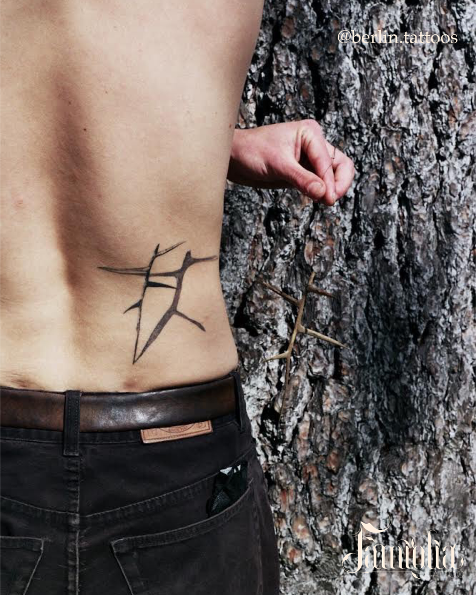
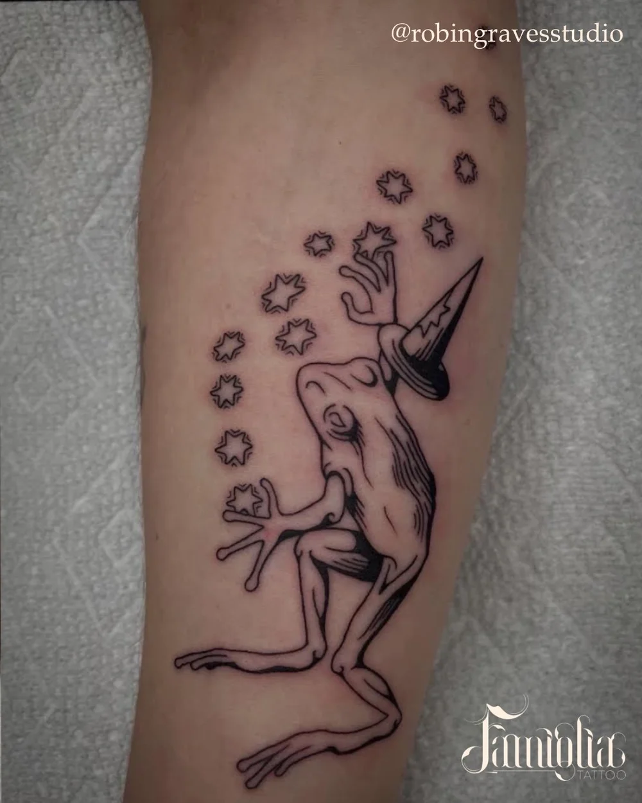
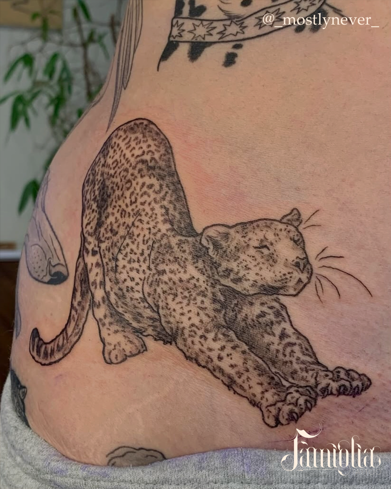
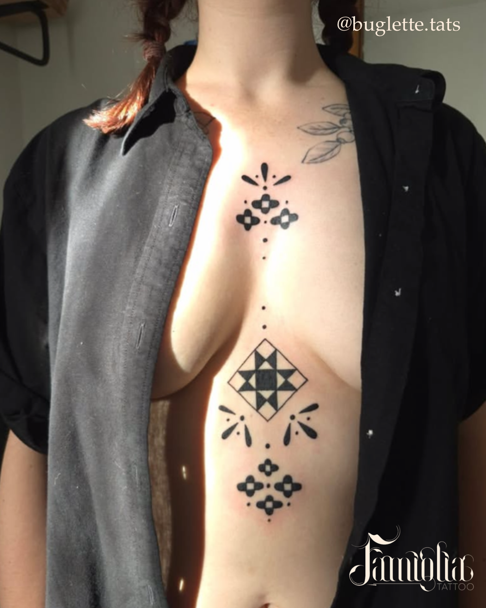
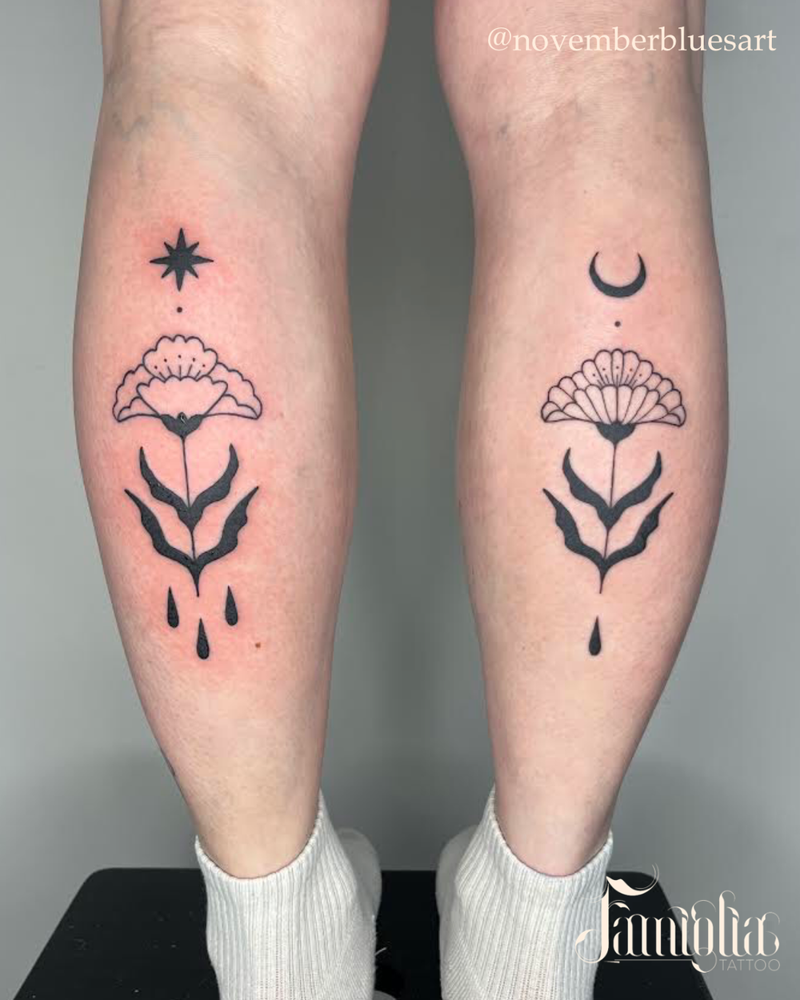

Queer-run private studio, South Jubilee
Browse Victoria artists before you book.
Famiglia Victoria is a private tattoo studio where artist fit, access details, and consent are all clear up front. Browse the Victoria roster, then contact your artist directly to book.
Private studioVictoria location at 1505 Fell St, South Jubilee.
Artist-led bookingEach artist manages their own schedule and contact details.
Access details includedStairs, lift, washroom, and scent notes are all documented before you arrive.

Booking basics
Everything practical, in one pass.
Browse the Victoria artists, pick the right fit, contact them directly, and expect a deposit plus cash or e-transfer on the day.
Why people choose Famiglia
Consent and clarity are part of the service.
Famiglia started in Victoria in 2018. Design approval, touch consent, privacy, accessibility, and artist fit are all made explicit before booking.

The studio tells clients to choose the artist whose style and practice fit the tattoo, then book through them directly.
The Victoria shop works out of a blue character house, with a shared waiting room and no stairs inside the studio once you are in.
Queer-run, artist-run, dignity-forward, and unusually specific about accessibility details.
Victoria artists
Choose by style, not by guesswork.
The Victoria roster spans flora and fauna, personal moments, playful darkness, life and decay, body-led movement, and bold negative space.

Paige Parker
Flora and fauna
@_paigeparker_
Paige’s page is described as a focus on flora and fauna.

Meagan Berlin
Personal moments
@berlin.tattoos
Meagan’s line on the studio site is “transcribing personal moments.”

Robin Graves Studio
Playful darkness
@robingravesstudio
Robin is framed on the artist page with the phrase “playful darkness.”

Maddy Vallee
Life, death, decay
@_mostlynever_
Maddy’s page centers work that embraces life, death, and decay.

Thea
Body movement
@buglette.tats
Thea’s description is “following the movement of body.”

Caroline
Negative space, bold lines
@novemberbluesart
Caroline’s artist page leads with negative space and bold lines.
Studio access
Access notes should be easy to scan.
The Victoria studio page is unusually specific about access. That belongs in a clean checklist instead of a buried FAQ paragraph.
- The waiting room sits up eight stairs from the sidewalk, with railings on both sides.
- A motor-powered wheelchair lift is available to the right of the staircase.
- There are no stairs inside the waiting room or the studio once you are in.
- The washroom is gender-neutral.
- A railing sits to the left of the toilet.
- Unscented soaps are provided, and no artificially scented cleaning products are used.
Client rights
What the studio promises, and what it asks back.
Famiglia’s client bill of rights is one of the clearest parts of the official brand. Surface the promises, then get out of the way.
- Respect for your preferred name and correct pronouns.
- Consent around touch, clothing adjustment, and final design approval.
- Equal treatment regardless of race, gender, religion, sexual orientation, physical ability, or health status.
- Arrive sober, clean, hydrated, and ready for a professional session.
- Use professional communication channels when booking or asking questions.
- Speak up if something feels wrong during the session or in the wider shop experience.